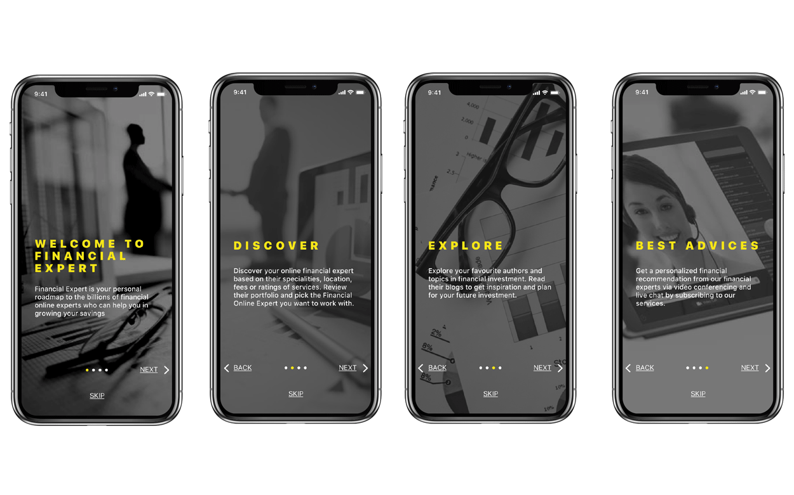
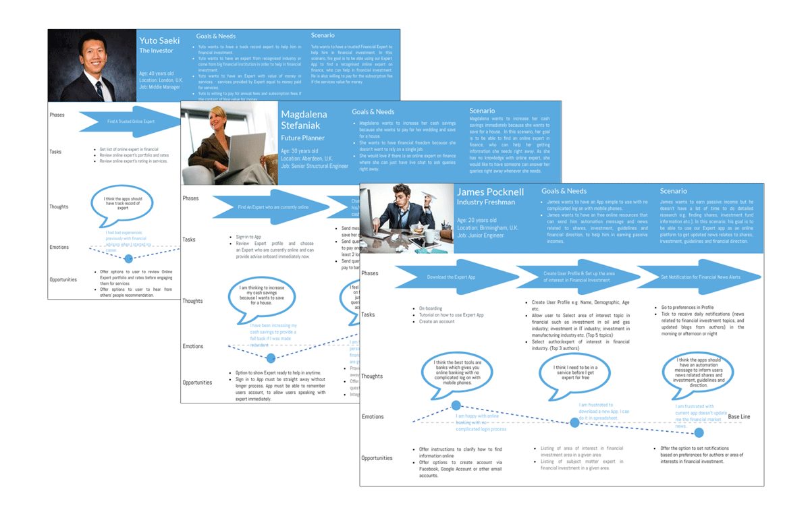
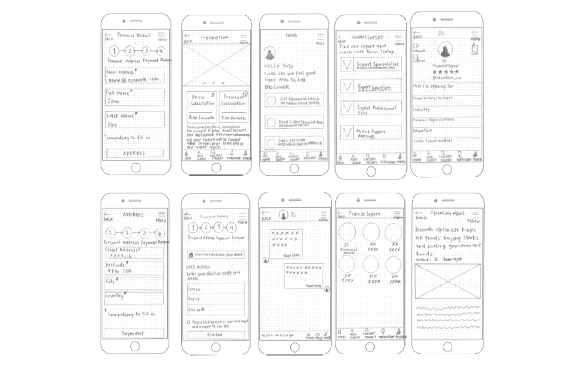
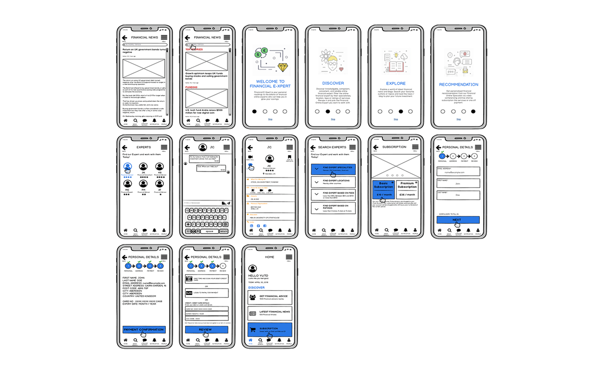
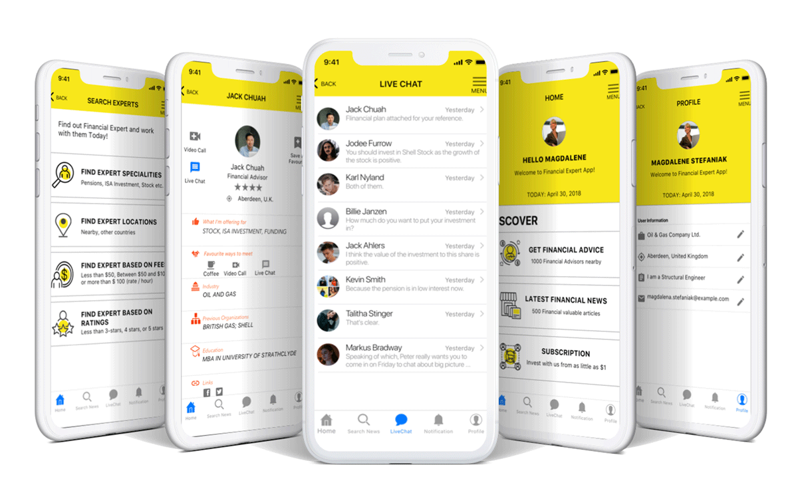
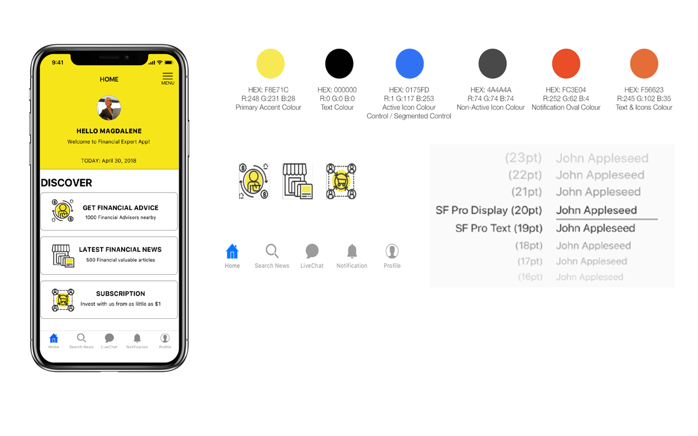
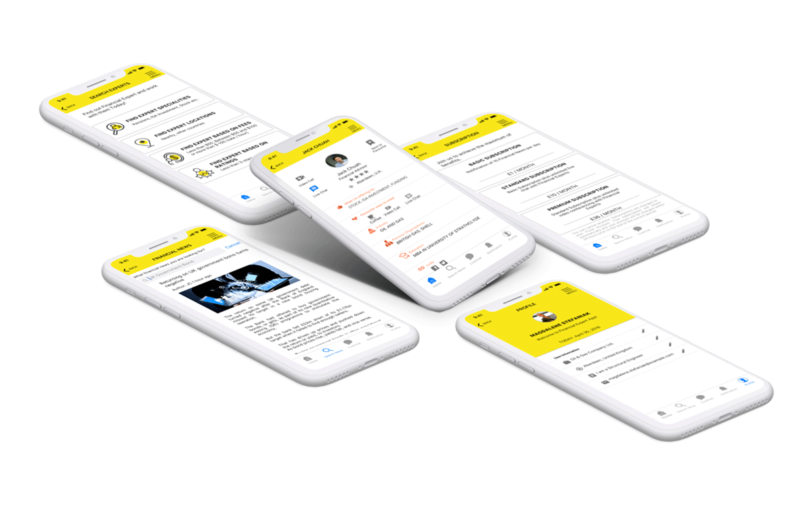

FINANCIAL EXPERT APP
A UX Case Study
February, 2018 - July, 2018
The FINANCIAL EXPERT App is a personal UX/UI design project to find a financial expert and work with him/her to grow the users savings. The project goal is to create a powerful tool in the hands of users to help them find a knowledgeable, competent, consistent and reliable Financial Expert online for financial investment advice.
THE PROJECT
I had the amazing opportunity to lead the design of the experience, working closely with my tutor and mentor in Career Foundry, to create the Financial Expert App. In short, I started my UX project by sequentially following the guide of the Career Foundry UX Immersion course. Where applicable I also tried to find extra content in order to build my understanding and knowledge solid. Initially, I started researching similar digital products in establishing my understanding of the products, and then moved on the user interviews, user research analysis, then created user personas, journey map and task flow. After define stage, I moved on my UX project by creating the sitemap, then wireframes & prototyping for usability testing and finally creating a set of design system for the next stage. It was crucial to design a centred user flow along with system logic in order to provide a seamless experience for the users.
The Meaning of Colour
Colours basically evoke the user emotion. Visual design keeps the meanings and associations the come with different hues in mind. Strategically I select and apply yellow and black colour in my design to create the feeling I hope to invoke.
The app colour tone of voice I want users to feel is a sign of ecstasy, joy and serenity emotion. To holistic healers, yellow is also the colour of peace. Yellow represents innocence and purity. Using yellow can produce a cheerful effect. Just think about the end result of financial planning: clients will feel peace and calm knowing their finances are being well managed.
In Chinese culture, yellow (gold) can be considered a colour of wealth and is often a symbol of great accomplishment. Gold is more expensive than silver. Yellow (gold) can also combine with black to bring the elegant when used as an accent colour in app design, especially for investment app.
Understanding Competitors
UX competitive analysis, therefore provided me with a new learning opportunity to assess the competitor products from the end user point of view.
Why?
UX Competitive analysis provided me with a new learning opportunity to assess the competitor products from the end user point of view. I could inspect how usable and learnable competitor digital applications are by conducting usability testing on their digital product. The goal in this stage is to find the actionable snippets of information I can use to create a better product than my competitors.
What did I do?
In the early stage of the project, I started to carry out the competitive analysis based on two companies: Just Answer and Ask an Expert. I started by assessing their business activities and then go into detailed UX competitive analysis on their website based on Usability, Layout, Navigation Structure, Compatibility, Differentiation, Calls to Action.
Results
Both companies provided a wide range of services to the users. Both companies digital websites and users were also easy to navigate and the layout of the websites and app were well-structured. However, I found the following main top three threats and weaknesses in their websites and apps.:
- the fees charging system was complicated. Hidden fees where users were unexpected.
- experts did not reply to my questions within the time frame as stated on their website.
- I was struggling to browse the topics as the content was not categorised well.

DISCOVERY
User Interviews are the fundamental research method I used for direct contact with my participants, to collect the first-hand personal accounts of experiencesm opinions, attitudes and perceptions in Financial world.
User Interview
Interviews are best conducted in person so that nuances of personal expression and body language are recognised in conversation. I also conducted the interview remotely by phone and using social media.
Key Objectives
- Who are the users?
- What sort of financial background are the users in?
- What challenges my potential users are currently or have previously faced?
- What sort of methods, resources and platform are they currently using to solve their problems?
The Challenge
During this stage, I found the challenge was to find people for the interview, but the interviews process went well. I interviewed 3 in person and 2 online via FB messenger. I gathered some insightful information that would be useful for creating my Expert App. My target audiences were in the age of demographics between 18 to 40 and who are mostly working for a company and earning for the living. None of the interviewees had a lot of experience to find an expert in financial online. Most of them would like to have free financial information online which can use it anytime and anywhere.
Key Points Learned From Users
- Do not trust certain Experts online without the proven track record.
- Difficult to find an advisor immediately when needed.
- Rates of services were not transparency.
DEFINE
User Personas consolidate archetypal description of user behavior patterns into representative profiles, to humanize design focus, test the scenarios and aid in design communication.
User Personas
We need to understand people in user experience design. However, attempting to design for everyone results in unfocused or incoherent solutions, so some level of consolidation is needed. Crafted from the information I collected from real users during the interview, I created user personas that provide an ideal solution to my design by capturing common behaviours in meaning and relatable profiles. Their human description facilitates easy empathy and communication, while their distinctions create useful design targets for responsive design.

User Journey Map
By using the user journey map, I then laid out the story of an individual actions, feelings, perceptions and frame of mind-including the positive, negative and neutral moment as he or she interacts with a multi-channel product or service over a period of time. By documenting the series of events and interaction that a person experiences, the journey map totally shifts my perspective from an operational, system-centred view to the larger context in which how users face their problem in the real world.
Task Analysis & User Flow
Before I dived straight into user flows, I carried out the task analysis to help me determine what tasks are required for the completion of a goal in the context of a persona. Three main goals had been identified at this stage:
- As a user, I want to receive an automation message regarding financial news, so that I can use this free online financial resource to help me in investment.
- As a user, I want to be able to message the online expert and receive a financial plan from my financial advisor so that I can take actions as planned to increase my cash saving for a house.
- As a user, I want to engage a trusted professional online expert in Financial, so that I can engage him/her in service to help me in financial investment.
DESIGN
Basically, a sitemap is different to a user flow. Think of it more like the blueprint or layout of a house: you have rooms for various purposes and with different things inside. It is how you organise everything you have and make it very easy to find.
Site Map
After I understood the users needs, my next step was to create a sitemap. The sitemap should be the starting point for any website and app design. Prior to starting any hand sketches and interface design, I wanted to get the information architecture right. I started creating a sitemap and then conducted a card sorting exercise with 10 users. Users were asked to group the menu items together and provide a category name. This shows me what group of menu items made sense to them and how closely it matched the existing sitemap I created.
Lesson Learned
During the process of creating the sitemap, I realised that sitemap helped me to organise and clarify the content that I needed to be on my financial experts app. The sitemap also helped me eliminate unnecessary pages. Simplify things by making sure duplicate content is combined into a single page, linked to from wherever the content needs to be referenced.
Duplicating the content basically a waste of time and resources. Sitemap helped me to clarify every single content purpose and goals. Lesson learned here was the app without purpose and goals often unfocused, hard to navigate and present a poor user experience.
Challenges
The following questions kept challenging me during the whole foundation design.
- What contents shall I put in utility navigation? And what contents shall I categorise as primary navigation?
- Is there also a way for users to save experts they have talked to before? So they do not need to go through the search process again? And are they able to chat with the expert (access to live chat screen or video conferencing screen) without having to go through the expert portfolio?
- Is the live chat in the utility navigation the same as in the primary navigation?
Low Fidelity Prototyping
I started with paper prototyping. Low-fidelity prototyping is common throughout early ideation processes in my design. In completing a task or working toward the goals, I stood on behalf of end users foot, started with swapping subsequent paper prototyping pages to simulate the interface response, to ensure the user flow is consistent. Any missing screens were drawn during this stage.
Mid & High Fidelity Prototyping
After a few rounds of iteration, I moved into mid-fidelity and high-fidelity prototype.
Mid-fidelity prototype is where I began including the finer key details and content of the apps in the design, including interactive system design, onboarding, sign in and sign up features, icons placement etc. My high-fidelity is more refined, representing the appearance of the final product in look and feel. These were relatively useful in later phase evaluation testing for feedback from testers.
 Usability Testing
Usability testing is a definitely valuable tool. It focuses on how people perform their tasks and seeks empirical evidence about how to improve the usability of an interface.
After completed my wireframes and prototypes, I conducted 6 usability tests using in person. Each participant was informed in advance about the test involvement, goals and objectives. During the test, participants were made comfortable and inform them that there was no right or wrong as I was testing the app but not them. I encouraged them to give me honest feedback and speak their thoughts out loud.
Usability testing is designed to help me identify the parts of an interface that most regularly frustrate and confuse people so that they can be prioritized, fixed and retested prior to launch. Tasks created were specific, concrete and reflected actual goals of the target audiences.
Main Issues
- Does not have the tab in onboarding page to guide user scrolling.
- The writing is difficult to read on the First impression against the background as it clashes with its detail at times.
- User difficult to understand the onboarding message.
Revised Version
- Add forward and backward arrows at each onboarding screen.
- Change the photos with no many icons and texts.
- Revisit and rephrase the onboarding message to make it clear and concise.
DESIGN SYSTEM
A design system is a series of components that can be reused in different combinations. Design system totally allows me to manage design at scale. My design system was now presented in the form of styles, patterns, guidelines and principles.
Visual Design
In this stage, the design system helped me to carry out an interface inventory for my app. I learned to speak the same language by documenting everything (create a design system) to enable my future product team members to develop further on this digital product. Design system helped to ensure consistency across platforms as well as consistency interaction patterns. This last activity basically introduced a healthy habit from software development, free up resources, and allowed designers to work on stuff that matter.
WRAP UP AND TAKE AWAY
The design process needs to be intentional, Design with Intention. The design choices need to be defensible.
Conclusion
I am grateful to several people who have helped me make this project in reality. Special thanks go to Laurence Bricker and Susanne Wilfinger Leung for being professional critics on my project content, and the way how I managed my project. I understood the process we talked about many times is related to how do we understand a problem and brainstorm the solutions to get the best results. All of these are a series of steps designed to help me in defining, ideation, producing and learning.
One important key lesson I learned here, as a junior - The design is a process of design thinking, but I have to convince many clients and team members of the choices I had made for a certain project in future. Pitching ideas is a skill I definitely need to develop, to make my design choices defensible.
